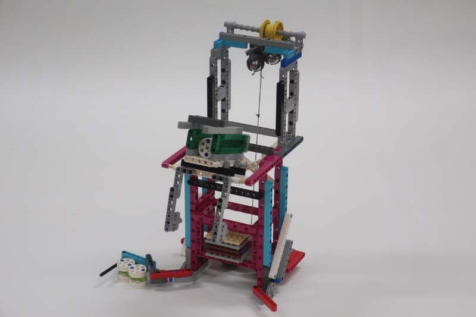

When designing our base robot, we established criteria first. We considered things such as the footprint, height, balance, drivetrain, sensors to be used, user interface, etc. To arrive at an optimal base robot. We also strived to design and build a robust base robot, which features a frame around the chassis to provide structural rigidity as well as means to square up against walls and mission models. When we design attachments, we keep in mind that these attachments need to be robust, easy to install and remove, and both passive and multi-purpose whenever possible. We first tested attachments by hand then programmed the robot to complete missions.


Our robot is very robust and compact with a frame for strength and an easier way to drop in attachments. We use four color sensors, well shielded from ambient light. Our robot has four small trailing wheels without rubber, which are steering neutral, and two small, narrow drive wheels. These smaller wheels allow for more accurate robot movements as they decrease the effect of error associated with the drive motor rotation sensors. However, we sacrifice some speed due to our small drive wheels.

In the interest of encouraging others to participate in FLL, we are sharing the building instructions for our base robot, below.

We tested for the optimal height for the color sensor. Our data is shown below. The "min" column shows the light reading for black, and the "max" column for white.


We have found that the green move blocks provided by the EV3 suite are unreliable. Although they have a built in PID feature, they still do not move the robot in a straight line. To test this, we set a designated starting spot for the robot and then we ran it until it hit the wall on the other side of the table. We repeated this dozens of times and found that each time it would end up in a different spot on the other side of the table. Each time it would be up to an inch away from the previous run. Then, we made our own error-corrected movement function (which you can read about in the programming section of this website). We conducted the same experiment using our block and found that there was much less error and the robot would consistently finish in the same position at the other end of the table.
| Name of Trip | Description | Picture |
|---|---|---|
| Trip 1: Power Plant | In the 1st zone, our robot uses this attachment to release the Energy Units from the Power Plant. One Energy Unit rolls into each launch area, and the 3rd is caught by the side bucket. The Gravity Car is released by the robot in this zone, completing the Watch Television mission. | Trip 2: Turbine | In the 2nd zone, our robot uses these attachments to release 3 Energy Units from the Wind Turbine mission and completes the Smart Grid and Hybrid Car missions. |
| Trip 3: Toy Units |
In zone 3, our robot collects 2 Looped Water Units and completes the Solar Farm mission.
It carries the Dinosaur to the left home area.
This gravity-powered attachment is released in the 3rd zone. It deposits 2 Energy Units into the Toy Factory, and 3 to the Rechargeable Battery target area. |
 |
| Trip 4: Hydroelectric Dam | In the 4th zone, the robot collects the Looped Water Unit in front of the Hydroelectric Dam. It then deposits 3 Energy Units into the energy storage and collects the tray. The robot then completes the Oil Platform mission and brings the Fueling Truck home. | |
| Trip 5: Looped Water
Trip 6: Power-To-X |
In zone 5, the robot puts 3 Looped Water Units in the Water Reservoir.
In zone 6, it delivers the Innovation Project Model and 3 Energy Units to the Hydrogen Plant Target Area. It then puts the Fuel Truck over the Fueling Station. |